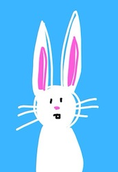

Your First Line Of Code: The Power To Make Things Go Away
I make web pages. Making web pages is a powerful and secret art. I am going to give you that power. Let us start now.
I am only able to give my attention to one thing at a time. Most web pages make me look at 20 things. I do not need 20 things. I need one thing. I get angry at the 19 things I do not need.
I have a power. I am able to make those 19 things go away so that I am not able to see them. I am going to give you that power now. Let us use that power to make this rabbit go away.

Put your mouse on the picture of the rabbit and push the right mouse button. You will see a list. Go to the thing on the list that says "Inspect Element." When you push "Inspect element you will see a complex window at the lower edge of Google Chrome.
These are Google Chrome's "developer tools." These are like secret powers people use to make websites.
In the left part of the Developer Tools you will see a line of writing that is colored blue. This bit of writing is what puts the rabbit on your page. "Inspect Element," lets you see what bit of writing is responsible for putting the rabbit on the page.
Now we will make the rabbit go away.
Make certain the bit of writing that is the picture of the rabbit is coloured gray. Then go to the "style" window in the upper right of the Developer Tools. Double click in the "Style" window. In the "Style" window put the word "visibility". Push the tab key one time. Put the word "hidden." Press enter.
To get out of the style window, push the escape key.
The style window will now look like this:
element.style {
visibility: hidden;
}
These special words only make it so that you are not able to see the rabbit. The rabbit is still there. You are able to see the space where the rabbit was. You simply are not able to see the rabbit.
You are able to make the rabbit come back by putting a mark in the box by the line you put in the style box.
You now have the power of making things you do not like go away.
Now let us put our hard work in a safe place. Push the keys Command-S. This makes the save window open. At the top, you are able to see that the page has a name. Make a new folder to put your page in. Go into that new folder. Then push save. If you go to the folder, you are able to see that the page is there. If you push on it two times quickly with the right mouse button, you are able to see that the page is there, and the rabbit is still gone.
The reason I put the page in a folder is because when you push 'save' you are putting two things in a safe place: all of the writing on a page goes into one place. It goes into a file that ends with ".html". All of the pictures on a page go into a folder. They go into a folder that ends with "_files". It is hard for me to make certain I keep the two things together if I do not put them in a folder, so that is what I did in the motion picture.
Our work is now in a safe place!
You are able to open your work and see it again by opening "how-to-go-to-the-secret-webpage-making-place-and-make-things-you-do-not-like-go-away.html" with Google Chrome.